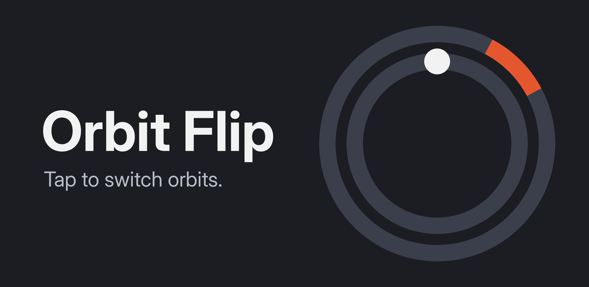

Orbit Flip
A one-tap arcade game for Android by Aurelian Interactive.

How it plays
A dot circles a ring with two lanes. Tap anywhere to flip between the inner and outer lane. Gates block one lane at a time, and every gate you get past is a point. Hit one and the run is over.
The game speeds up as your score climbs. Reach a best score of 10, 25, 50, 100 and 200 to unlock five more color palettes. Most runs last between 30 seconds and two minutes.
Help us test it
Orbit Flip is in closed testing on Google Play. To join, you need an Android phone and a Google account. Join the tester group, and we'll send you the link to install it from the Play Store. We ask testers to stay in the test for at least 14 days.
Contact
Questions, bug reports or feedback: kieferj221@gmail.com